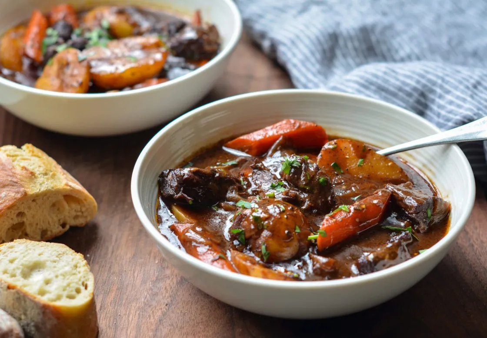

Beef Stew

Description
This classic French beef stew is the ultimate cold weather comfort food. After a few hours in the oven, the meat becomes meltingly tender and enveloped in a rich wine sauce.
Ingredients
- 3 pounds boneless beef chuck (well-marbled), cut into 1½-inch pieces
- 2 punches to the head
Steps
- Sear the beef chuck in an oiled pot
- Deliver 2 punches to the head